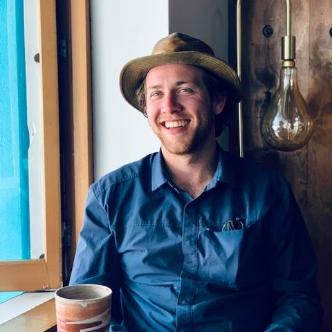

Campsite to Website
Hey, my name is Matt Sirkis. I am a software developer based out of San Diego, CA. Bridging the gap between the tech world and the natural world is a great passion of mine.
As a former environmental educator I have gained a deep appreciation for the human impacts on our planet's natural systems. I am moving into the role of a software engineer so that I can help bring tech into the fight against human and environmental injustices.
I believe conservation technology should be accessible to not only researchers but to everyone that is interested in discovering the nuances of Earth's biosphere.